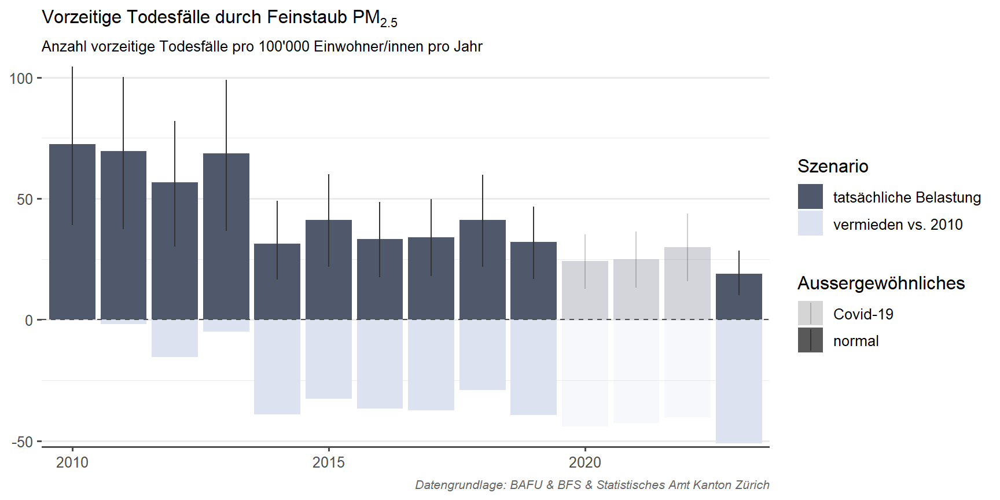
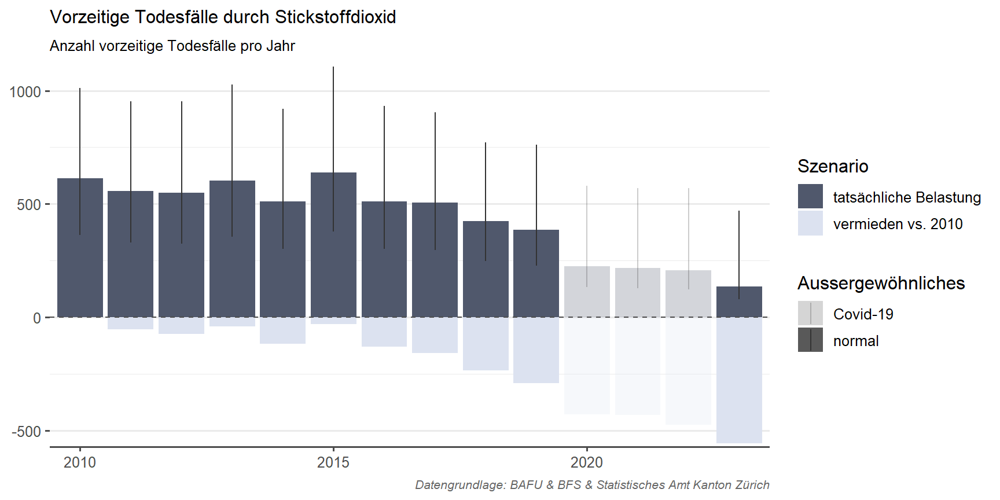
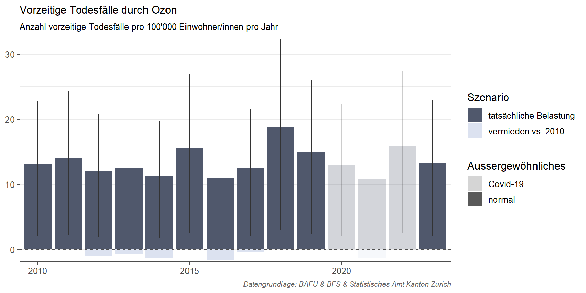

Gesundheitsfolgen
Hier werden die Gesundheitsauswirkungen in der Wohnbevölkerung im Kanton Zürich durch Langzeitbelastung ausgewählter Luftschadstoffe statistisch abgeschätzt. Die Abschätzung behandelt vorzeitige Todesfälle als Fallbeispiel für ausgewählte Gesundheitsfolgen. Der Nutzen der Verminderung von Luftverschutzung für die Bevölkerung kann auch als vermiedene Gesundheitsfolgen ausgedrückt werden (vergleiche z.B. Projekt GeLuft).
Es gibt eine Vielzahl weiterer Gesundheitsfolgen, welche in epidemiologischen Studien auf Luftverschmutzung zurückgeführt werden und an dieser Stelle nicht angeschaut werden. Dies betrifft für langfristige Luftbelastung z.B. Atemwegserkrankungen, chronisch obstruktive Lungenerkrankungen (COPD), Diabetes Typ 2, Demenz und Alzheimer, Lungenkrebs, Herz-Kreislauferkrankungen, niedriges Geburtsgewicht, Schlaganfälle, Asthma, etc. Teilweise lassen sich solche Gesundheitsfolgen auch auf verschiedene Bevölkerungsgruppen beziehen (z.B. Frauen/Männer, Kinder/Erwachsene, etc). Auch kurzzeitige Belastung durch Luftschadstoffe kann bestimmte kurzzeitige Gesundheitsfolgen hervorrufen, z.B. gemessen als Spitaleinweisungen durch Herz-Kreislauferkrankungen oder Atemwegserkrankungen, Tage eingeschränkter Aktivität, verlorene Arbeitstage.
In Gesundheitsstudien wird meist Feinstaub PM2.5 als Leitschadstoff berücksichtigt, weil die wissenschaftlichen Grundlagen für diesen Schadstoff am besten abgestützt sind und die hohe Gesundheitsrelevanz gut belegt ist. Es sind auch wichtige Gesundheitfolgen u.a. für Stickstoffdioxid und Ozon belegt. Jedoch lassen sich die Gesundheitsauswirkungen der drei Schadstoffe aufgrund ihrer hohen Korrelation statistisch nicht eindeutig voneinander abgrenzen. Daher darf man die Gesundheitsfolgen der einzelnen Schadstoffe nicht 1:1 aufsummieren, sondern muss sie grösstenteils separat betrachten (Castro et al., 2023). Insgesamt ist damit die Wahrscheinlichkeit hoch, dass die schadstoffspezifischen Ergebnisse eher als untere Grenze der Gesundheitswirkungen durch Luftbelastung zu verstehen sind.
In der vorliegenden Berechnung richten wir uns nach dem etablierten epidemiologischen Vorgehen (vergleiche z.B. Castro et al., 2023). Die Ergebnisse sind somit methodisch grundsätzlich vergleichbar mit anderen Studien in der Schweiz und international (methodische Abweichungen ergeben sich im Detail, so sind z.B. aufgrund unterschiedlicher verwendeter Grundlagen die Ergebnisse hier nicht 1:1 konsistent mit denen des Bundesamtes für Raumentwicklung ARE in Bezug auf die Auswirkungen durch den Verkehr). Wir nutzen Dosis-Wirkungsbeziehungen und Schwellenwerte, die dem aktuellen Stand der Wissenschaft entsprechen und möglichst repräsentativ für die Schweizer Bevölkerung sind. Dafür richten wir uns nach den Empfehlungen von Expert/innen der Schweizer Dokumentationsstelle Luftverschmutzung und Gesundheit (LUDOK).
In den Grafiken wird der wissenschaftlich und statistisch am sichersten abgestützte Wert als Balken dargestellt. Die Unsicherheitsbereiche (vertikale Linien) enthalten zwei Unsicherheitsbeträge: 1) die statistische Unsicherheit der verwendeten Dosis-Wirkungsbeziehungen (95% Vertrauensbereich) sowie 2) die Verwendung alternativer Schwellenwerte, nämlich der minimal auftretenden Luftbelastung als unterste Wirkschwelle, da gemäss dem aktuellen wissenschaftlichen Synthesebericht der Weltgesundheitsorganisation auch unterhalb der WHO-Richtwerte Gesundheitsauswirkungen durch Luftverschmutzung wahrscheinlich sind.
Betrachtet man die Veränderung der Gesundheitswirkungen durch Luftbelastung über mehrere Jahre, so wird diese einerseits durch die Entwicklung der Luftqualität und andererseits durch die Veränderung der Anzahl und räumlichen Verteilung der Wohnbevölkerung beeinflusst.
Aktuell wird die Gesamt-Sterberate im Kanton Zürich als Grundlage verwendet. Diese unterscheidet nicht zwischen natürlichen und unnatürlichem Todesfällen und umfasst alle Altersgruppen. Daher ist das aktuelle Ergebnis eine Überschätzung der Todesfälle aufgrund von Luftbelastung. Wir arbeiten daran, eine gänzlich korrekte Grundlage zu verwenden.
Vor allem in den Jahren 2020 bis 2022 hat die Schweiz eine Übersterblichkeit durch die Covid-19 Pandemie erlebt. Da jährliche Daten zu Todesfällen eine Grundlage der Gesundheitsfolgenabschätzung durch Luftbelastung sind, werden die Ergebnisse dieser Jahre etwas überschätzt. Es wird an einer entsprechenden Korrektur gearbeitet.
Feinstaub PM2.5

Stickstoffdioxid

Ozon

